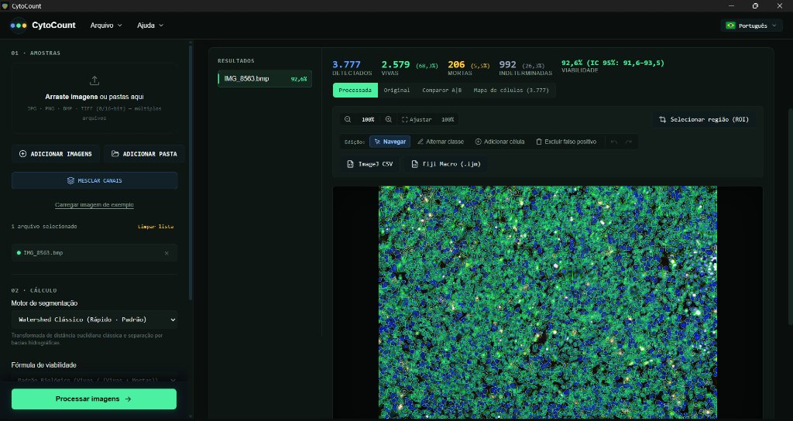
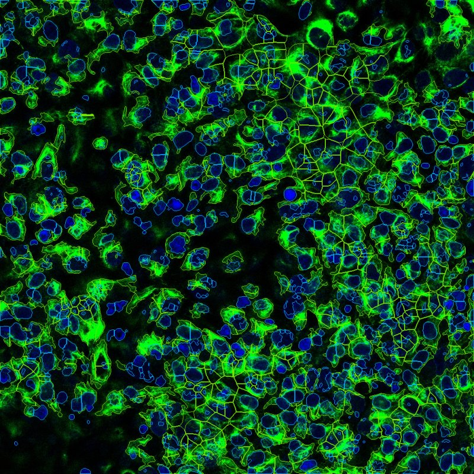
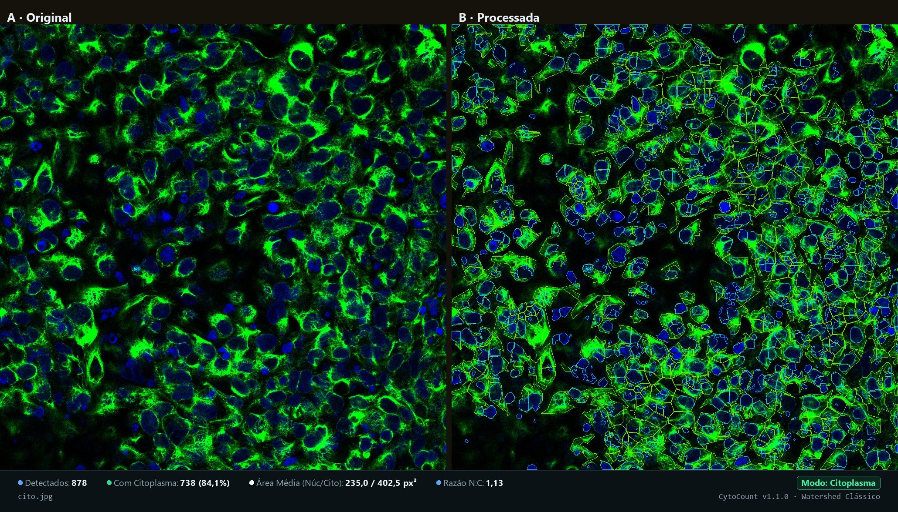

Software desktop nativo e ultrarrápido (Rust + Python) para microscopia confocal e epifluorescência. Segmentação independente de citoplasma verde por partição geodésica Voronoi, classificação tri-canal com intervalo de confiança de Wilson a 95% e exportação de alta resolução pronta para periódicos científicos em 300 DPI.

Controle interativo subpixel para comparação direta entre fluorescência bruta e as partições celulares identificadas pelos algoritmos.

Arraste o cursor horizontalmente sobre a imagem para alternar continuamente entre o canal original puro e os contornos celulares identificados.

Achateamento automático de planos Z confocal e controle instantâneo de brilho/contraste linear e logarítmico.

Particionamento Voronoi geodésico centrado nos núcleos DAPI sem sobreposição celular contígua.

Cálculo estatístico com intervalo de confiança de Wilson (95%) e auditoria matemática anti-falso-positivo.

Elimina molduras cinzas e fundos pretos pesados em apresentações acadêmicas e publicações de alto impacto.
Integração de motores neurais e algoritmos analíticos clássicos otimizados para alto rendimento e máxima reprodutibilidade.
Ingestão direta de arquivos brutos Carl Zeiss (.czi), Leica (.lif), Nikon (.nd2), Olympus (.oib, .oif) e OME-TIFF com Projeção de Intensidade Máxima (MIP) automática em Z.
Dois pipelines matematicamente isolados. A morfometria citoplasmática atua estritamente sobre a área celular verde sem distorcer o modelo estocástico de viabilidade.
Alternância instantânea entre Watershed Euclidiano de alta velocidade, StarDist 2D (polígonos estrelados de 32 raios) e Cellpose 2D (fluxo vetorial de gradientes para aglomerados densos).
Insere retículos e barras de escala calibradas em µm/pixel de acordo com a objetiva utilizada, cumprindo as exigências formais dos periódicos dos grupos Nature, Cell e Science.
Diferente de contadores empíricos, o CytoCount calcula o intervalo binomial de Wilson a 95%, garantindo a conservação integral dos núcleos identificados (Detectados = Vivas + Mortas + Indeterminadas) com emissão de alertas automáticos quando o sinal de marcação for insuficiente.
Execução estritamente local em máquina desktop. Os dados confidenciais de linhagens celulares, patentes e pesquisas pré-clínicas permanecem sob controle do laboratório, sem qualquer conexão externa.
Quantificação morfométrica real gerada sobre lâmina de microscopia confocal teste (resolução 1024 × 1024 px).
| Parâmetro Morfométrico | Modo Citoplasma (Verde) | Modo Viabilidade Tri-Canal |
|---|---|---|
| Células / Núcleos Detectados (DAPI) | 878 núcleos | 878 núcleos |
| Células com Citoplasma Verde (FITC) | 738 células (84,1%) | 259 células viáveis (29,5%) |
| Células sem Citoplasma / Mortas | 140 células (15,9%) | 10 células mortas (1,1%) |
| Área Média Nuclear | 235,0 px² | — |
| Área Média Citoplasmática | 402,5 px² | — |
| Área Média Celular Total | 637,5 px² | — |
| Razão Núcleo-Citoplasma Média (N:C) | 1,13 | — |
| Intervalo de Confiança (Wilson 95%) | — | 96,3% [93,3% — 98,0%] |
Para referenciar o software CytoCount em sua dissertação, tese ou artigo científico indexado:
@software{candido_2026_cytocount,
author = {Cândido, Gabriel},
title = {{CytoCount: High-Throughput Automated Cell Counting,
Cytoplasmic Morphometry and Viability Analysis for
Fluorescence Microscopy}},
month = nov,
year = 2026,
publisher = {Zenodo},
version = {v1.3.1},
doi = {10.5281/zenodo.24224693},
url = {https://doi.org/10.5281/zenodo.24224693}
}